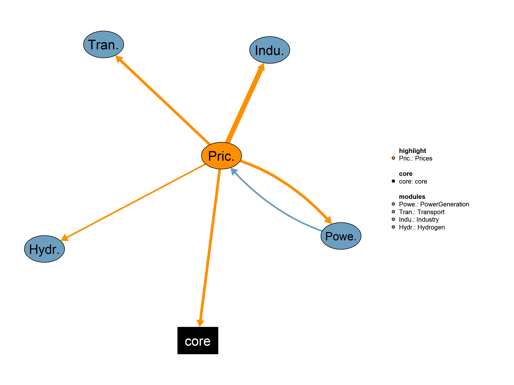

This is the Prices module.

| Description | Unit | A | |
|---|---|---|---|
| VMVCostPowGenAvgLng (allCy, ESET, YTIME) |
Long-term average power generation cost | \(US\$2015/kWh\) | x |
| Description | Unit | |
|---|---|---|
| VMVPriceElecInd (allCy, YTIME) |
Electricity index - a function of industry price | \(1\) |
| VMVPriceElecIndResConsu (allCy, ESET, YTIME) |
Electricity price to Industrial and Residential Consumers | \(US\$2015/KWh\) |
| VMVPriceFuelAvgSub (allCy, DSBS, YTIME) |
Average fuel prices per subsector | \(k\$2015/toe\) |
| VMVPriceFuelSubsecCarVal (allCy, SBS, EF, YTIME) |
Fuel prices per subsector and fuel | \(k\$2015/toe\) |
| VMVPriceFuelSubsecCHP (allCy, DSBS, EF, YTIME) |
Fuel prices per subsector and fuel for CHP plants | \(kUS\$2015/toe\) |
This is the legacy realization of the Prices module.
Equations*** Prices
QPriceFuelSepCarbonWght(allCy,SBS,EF,YTIME) "Compute fuel prices per subsector and fuel, separate carbon value in each sector"Interdependent Equations
Q08PriceElecIndResConsu(allCy,ESET,YTIME) "Compute electricity price in Industrial and Residential Consumers"
Q08PriceFuelSubsecCarVal(allCy,SBS,EF,YTIME) "Compute fuel prices per subsector and fuel, separate carbon value in each sector"
Q08PriceFuelAvgSub(allCy,DSBS,YTIME) "Compute average fuel price per subsector"
Q08PriceElecIndResNoCliPol(allCy,ESET,YTIME) "Compute electricity price in Industrial and Residential Consumers excluding climate policies"
Q08PriceFuelSubsecCHP(allCy,DSBS,EF,YTIME) "Compute fuel prices per subsector and fuel especially for chp plants"
Q08PriceElecInd(allCy,YTIME) "Compute electricity industry prices"
;
Variables*** Prices Variables
VPriceFuelSepCarbonWght(allCy,SBS,EF,YTIME) "Fuel prices per subsector and fuel mutliplied by weights (kUS$2015/toe)"Interdependent Variables
VMVPriceElecIndResConsu(allCy,ESET,YTIME) "Electricity price to Industrial and Residential Consumers (US$2015/KWh)"
VMVPriceFuelSubsecCarVal(allCy,SBS,EF,YTIME) "Fuel prices per subsector and fuel (k$2015/toe)"
VMVPriceFuelAvgSub(allCy,DSBS,YTIME) "Average fuel prices per subsector (k$2015/toe)"
VMVPriceElecIndResNoCliPol(allCy,ESET,YTIME) "Electricity price to Industrial and Residential Consumers (US$2015/KWh)"
VMVPriceFuelSubsecCHP(allCy,DSBS,EF,YTIME) "Fuel prices per subsector and fuel for CHP plants (kUS$2015/toe)"
VMVPriceElecInd(allCy,YTIME) "Electricity index - a function of industry price (1)"*** Miscellaneous
VFuelPriSubNoCarb(allCy,SBS,EF,YTIME) "Fuel prices per subsector and fuel without carbon value (kUS$2015/toe)"
;GENERAL INFORMATION Equation format: “typical useful energy demand equation” The main explanatory variables (drivers) are activity indicators (economic activity) and corresponding energy costs. The type of “demand” is computed based on its past value, the ratio of the current and past activity indicators (with the corresponding elasticity), and the ratio of lagged energy costs (with the corresponding elasticities). This type of equation captures both short term and long term reactions to energy costs. * Prices The equation computes fuel prices per subsector and fuel with separate carbon values in each sector for a specific scenario, subsector, fuel, and year.The equation considers various scenarios based on the type of fuel and whether it is subject to changes in carbon values. It incorporates factors such as carbon emission factors carbon values for all countries, electricity prices to industrial and residential consumers, efficiency values, and the total hydrogen cost per sector.The result of the equation is the fuel price per subsector and fuel, adjusted based on changes in carbon values, electricity prices, efficiency, and hydrogen costs.
Q08PriceFuelSubsecCarVal(allCy,SBS,EF,YTIME)$(SECTTECH(SBS,EF) $TIME(YTIME) $(not sameas("NUC",EF)) $runCy(allCy))..
VMVPriceFuelSubsecCarVal(allCy,SBS,EF,YTIME)
=E=
(VMVPriceFuelSubsecCarVal(allCy,SBS,EF,YTIME-1) +
iCo2EmiFac(allCy,SBS,EF,YTIME) * sum(NAP$NAPtoALLSBS(NAP,SBS),(VCarVal(allCy,NAP,YTIME)))/1000
)$( not (ELCEF(EF) or HEATPUMP(EF) or ALTEF(EF)))
+
(
VMVPriceFuelSubsecCarVal(allCy,SBS,EF,YTIME-1)$(DSBS(SBS))$ALTEF(EF)
)
+
(
( VMVPriceElecIndResConsu(allCy,"i",YTIME)$INDTRANS(SBS)+VMVPriceElecIndResConsu(allCy,"r",YTIME)$RESIDENT(SBS))/sTWhToMtoe
+
((iEffValueInDollars(allCy,SBS,YTIME))/1000)$DSBS(SBS)
)$(ELCEF(EF) or HEATPUMP(EF))
+
(
iHydrogenPri(allCy,SBS,YTIME-1)$DSBS(SBS)
)$(H2EF(EF) or sameas("STE1AH2F",EF));The equation calculates the fuel prices per subsector and fuel multiplied by weights considering separate carbon values in each sector. This equation is applied for a specific scenario, subsector, fuel, and year. The calculation involves multiplying the sector’s average price weight based on fuel consumption by the fuel price per subsector and fuel. The weights are determined by the sector’s average price, considering the specific fuel consumption for the given scenario, subsector, and fuel. This equation allows for a more nuanced calculation of fuel prices, taking into account the carbon values in each sector. The result represents the fuel prices per subsector and fuel, multiplied by the corresponding weights, and adjusted based on the specific carbon values in each sector.
QPriceFuelSepCarbonWght(allCy,DSBS,EF,YTIME)$(SECTTECH(DSBS,EF) $TIME(YTIME) $runCy(allCy))..
VPriceFuelSepCarbonWght(allCy,DSBS,EF,YTIME)
=E=
iWgtSecAvgPriFueCons(allCy,DSBS,EF) * VMVPriceFuelSubsecCarVal(allCy,DSBS,EF,YTIME);The equation calculates the average fuel price per subsector. These average prices are used to further compute electricity prices in industry (using the OI “other industry” avg price), as well as the aggregate fuel demand (of substitutable fuels) per subsector. In the transport sector they feed into the calculation of the activity levels.
Q08PriceFuelAvgSub(allCy,DSBS,YTIME)$(TIME(YTIME)$(runCy(allCy)))..
VMVPriceFuelAvgSub(allCy,DSBS,YTIME)
=E=
sum(EF$SECTTECH(DSBS,EF), VPriceFuelSepCarbonWght(allCy,DSBS,EF,YTIME)); The equation calculates the electricity price for industrial and residential consumers in a given scenario, energy set, and year. The electricity price is based on the previous year’s production costs, incorporating various factors such as fuel prices, factors affecting electricity prices to consumers, and long-term average power generation costs. The equation is structured to handle different energy sets. It calculates the electricity price for industrial consumers and residential consumers separately. The electricity price is influenced by fuel prices, factors affecting electricity prices, and long-term average power generation costs. It provides a comprehensive representation of the factors contributing to the electricity price for industrial and residential consumers in the specified scenario, energy set, and year.
Q08PriceElecIndResConsu(allCy,ESET,YTIME)$(TIME(YTIME)$(runCy(allCy))).. !! The electricity price is based on previous year's production costs
VMVPriceElecIndResConsu(allCy,ESET,YTIME)
=E=
(1 + iVAT(allCy,YTIME)) *
(
(
(VMVPriceFuelSubsecCarVal(allCy,"OI","ELC",YTIME-1)*sTWhToMtoe)$TFIRST(YTIME-1) +
(
VMVCostPowGenAvgLng(allCy,"i",YTIME-1)
)$(not TFIRST(YTIME-1))
)$ISET(ESET)
+
(
(VMVPriceFuelSubsecCarVal(allCy,"HOU","ELC",YTIME-1)*sTWhToMtoe)$TFIRST(YTIME-1) +
(
VMVCostPowGenAvgLng(allCy,"r",YTIME-1)
)$(not TFIRST(YTIME-1))
)$RSET(ESET)
);Compute electricity price in Industrial and Residential Consumers excluding climate policies by multiplying the Factors affecting electricity prices to consumers by the sum of Fuel prices per subsector and fuel multiplied by the TWh to Mtoe conversion factor adding the Factors affecting electricity prices to consumers and the Long-term average power generation cost excluding climate policies for Electricity of Other Industrial sectors and for Electricity for Households .
Q08PriceElecIndResNoCliPol(allCy,ESET,YTIME)$(TIME(YTIME)$(runCy(allCy))).. !! The electricity price is based on previous year's production costs
VMVPriceElecIndResNoCliPol(allCy,ESET,YTIME)
=E=
(1 + iVAT(allCy, YTIME)) *
(
(
(VMVPriceFuelSubsecCarVal(allCy,"OI","ELC",YTIME-1)*sTWhToMtoe)$TFIRST(YTIME-1) +
(
VCostPowGenLonNoClimPol(allCy,"i",YTIME-1)
)$(not TFIRST(YTIME-1))
)$ISET(ESET)
+
(
(VMVPriceFuelSubsecCarVal(allCy,"HOU","ELC",YTIME-1)*sTWhToMtoe)$TFIRST(YTIME-1) +
(
VCostPowGenLonNoClimPol(allCy,"r",YTIME-1)
)$(not TFIRST(YTIME-1))
)$RSET(ESET)
);This equation calculates the fuel prices per subsector and fuel, specifically for Combined Heat and Power (CHP) plants, considering the profit earned from electricity sales. The equation incorporates various factors such as the base fuel price, renewable value, variable cost of technology, useful energy conversion factor, and the fraction of electricity price at which a CHP plant sells electricity to the network. The fuel price for CHP plants is determined by subtracting the relevant components for CHP plants (fuel price for electricity generation and a fraction of electricity price for CHP sales) from the overall fuel price for the subsector. Additionally, the equation includes a square root term to handle complex computations related to the difference in fuel prices. This equation provides insights into the cost considerations for fuel in the context of CHP plants, considering various economic and technical parameters.
Q08PriceFuelSubsecCHP(allCy,DSBS,EF,YTIME)$(TIME(YTIME) $(not TRANSE(DSBS)) $SECTTECH(DSBS,EF) $runCy(allCy))..
VMVPriceFuelSubsecCHP(allCy,DSBS,EF,YTIME)
=E=
(((VMVPriceFuelSubsecCarVal(allCy,DSBS,EF,YTIME) + (VRenValue(YTIME)/1000)$(not RENEF(EF))+iVarCostTech(allCy,DSBS,EF,YTIME)/1000)/iUsfEneConvSubTech(allCy,DSBS,EF,YTIME)-
(0$(not CHP(EF)) + (VMVPriceFuelSubsecCarVal(allCy,"OI","ELC",YTIME)*sFracElecPriChp*VMVPriceElecInd(allCy,YTIME))$CHP(EF))) + SQRT( SQR(((VMVPriceFuelSubsecCarVal(allCy,DSBS,EF,YTIME)+iVarCostTech(allCy,DSBS,EF,YTIME)/1000)/iUsfEneConvSubTech(allCy,DSBS,EF,YTIME)-
(0$(not CHP(EF)) + (VMVPriceFuelSubsecCarVal(allCy,"OI","ELC",YTIME)*sFracElecPriChp*VMVPriceElecInd(allCy,YTIME))$CHP(EF)))) ) )/2;This equation determines the electricity industry prices based on an estimated electricity index and a technical maximum of the electricity to steam ratio in Combined Heat and Power plants. The industry prices are calculated as a function of the estimated electricity index and the specified maximum electricity to steam ratio. The equation ensures that the electricity industry prices remain within a realistic range, considering the technical constraints of CHP plants. It involves the estimated electricity index, and a technical maximum of the electricity to steam ratio in CHP plants is incorporated to account for the specific characteristics of these facilities. This equation ensures that the derived electricity industry prices align with the estimated index and technical constraints, providing a realistic representation of the electricity market in the industrial sector.
Q08PriceElecInd(allCy,YTIME)$(TIME(YTIME)$(runCy(allCy)))..
VMVPriceElecInd(allCy,YTIME) =E=
( VIndxElecIndPrices(allCy,YTIME) + sElecToSteRatioChp - SQRT( SQR(VIndxElecIndPrices(allCy,YTIME)-sElecToSteRatioChp) ) )/2;table iFuelPrice(allCy,SBS,EF,YTIME) "Prices of fuels per subsector (k$2015/toe)"
$ondelim
$include"./iFuelPrice.csv"
$offdelim
;
Parameters
iDiffFuelsInSec(SBS) "Auxiliary parameter holding the number of different fuels in a sector"
iWgtSecAvgPriFueCons(allCy,SBS,EF) "Weights for sector's average price, based on fuel consumption (1)"
iVAT(allCy,YTIME) "VAT (value added tax) rates (1)"
iHydrogenPri(allCy,SBS,YTIME) "Total Hydrogen Cost Per Sector (US$2015/toe)"
iElecIndex(allCy,YTIME) "Electricity Index (1)"
;
loop SBS do
iDiffFuelsInSec(SBS) = 0;
loop EF$(SECTTECH(SBS,EF) $(not plugin(EF))) do
iDiffFuelsInSec(SBS) = iDiffFuelsInSec(SBS)+1;
endloop;
endloop;
iWgtSecAvgPriFueCons(runCy,TRANSE,EF)$(SECTTECH(TRANSE,EF) $(not plugin(EF)) ) = (iFuelConsPerFueSub(runCy,TRANSE,EF,"%fBaseY%") / iTotFinEneDemSubBaseYr(runCy,TRANSE,"%fBaseY%"))$iTotFinEneDemSubBaseYr(runCy,TRANSE,"%fBaseY%")
+ (1/iDiffFuelsInSec(TRANSE))$(not iTotFinEneDemSubBaseYr(runCy,TRANSE,"%fBaseY%"));
iWgtSecAvgPriFueCons(runCy,NENSE,EF)$SECTTECH(NENSE,EF) = ( iFuelConsPerFueSub(runCy,NENSE,EF,"%fBaseY%") / iTotFinEneDemSubBaseYr(runCy,NENSE,"%fBaseY%") )$iTotFinEneDemSubBaseYr(runCy,NENSE,"%fBaseY%")
+ (1/iDiffFuelsInSec(NENSE))$(not iTotFinEneDemSubBaseYr(runCy,NENSE,"%fBaseY%"));
iWgtSecAvgPriFueCons(runCy,INDDOM,EF)$(SECTTECH(INDDOM,EF)$(not sameas(EF,"ELC"))) = ( iFuelConsPerFueSub(runCy,INDDOM,EF,"%fBaseY%") / (iTotFinEneDemSubBaseYr(runCy,INDDOM,"%fBaseY%") - iFuelConsPerFueSub(runCy,INDDOM,"ELC","%fBaseY%")) )$( iTotFinEneDemSubBaseYr(runCy,INDDOM,"%fBaseY%") - iFuelConsPerFueSub(runCy,INDDOM,"ELC","%fBaseY%") )
+ (1/(iDiffFuelsInSec(INDDOM)-1))$(not (iTotFinEneDemSubBaseYr(runCy,INDDOM,"%fBaseY%") - iFuelConsPerFueSub(runCy,INDDOM,"ELC","%fBaseY%")));
iWgtSecAvgPriFueCons(runCy,SBS,EF)$(SECTTECH(SBS,EF) $sum(ef2$SECTTECH(SBS,EF),iWgtSecAvgPriFueCons(runCy,SBS,EF2))) = iWgtSecAvgPriFueCons(runCy,SBS,EF)/sum(ef2$SECTTECH(SBS,EF),iWgtSecAvgPriFueCons(runCy,SBS,EF2));
iVAT(runCy, YTIME) = 0;
iHydrogenPri(runCy,SBS,YTIME)=4.3;
iElecIndex(runCy,YTIME) = 0.9;
iFuelPrice(runCy,SBS,EF,YTIME) = iFuelPrice(runCy,SBS,EF,YTIME)/1000; !! change units $15 -> k$15VARIABLE INITIALISATION
VPriceFuelSepCarbonWght.scale(runCy,DSBS,EF,YTIME)=1e-6;
QPriceFuelSepCarbonWght.scale(runCy,DSBS,EF,YTIME)=VPriceFuelSepCarbonWght.scale(runCy,DSBS,EF,YTIME);
VMVPriceFuelSubsecCarVal.L(runCy,SBS,EF,YTIME) = 1.5;
VMVPriceFuelSubsecCarVal.L(runCy,"PG",PGEF,YTIME)=1;
VMVPriceFuelSubsecCarVal.FX(runCy,SBS,EF,YTIME)$(SECTTECH(SBS,EF)$(not HEATPUMP(EF))$(not An(YTIME))) = iFuelPrice(runCy,SBS,EF,YTIME);
VMVPriceFuelSubsecCarVal.FX(runCy,SBS,ALTEF,YTIME)$(SECTTECH(SBS,ALTEF)$(not An(YTIME))) = sum(EF$ALTMAP(SBS,ALTEF,EF),iFuelPrice(runCy,SBS,EF,YTIME));
VMVPriceFuelSubsecCarVal.FX(runCy,"PG","NUC",YTIME) = 0.025; !! fixed price for nuclear fuel to 25Euro/toe
VMVPriceFuelSubsecCarVal.FX(runCy,"H2P","NUC",YTIME) = 0.025; !! fixed price for nuclear fuel to 25Euro/toe
VMVPriceFuelSubsecCarVal.FX(runCy,SBS,"MET",YTIME)$(not An(YTIME)) = 800; !! fixed price methanol
VMVPriceFuelSubsecCarVal.FX(runCy,SBS,"ETH",YTIME)$(not An(YTIME)) = 800; !! fixed price for ethanol
VMVPriceFuelSubsecCarVal.FX(runCy,SBS,"BGDO",YTIME)$(not An(YTIME)) = 350; !! fixed price for biodiesel
VMVPriceFuelSubsecCarVal.FX(runCy,INDDOM,"HEATPUMP",YTIME)$(SECTTECH(INDDOM,"HEATPUMP")$(not An(YTIME))) = iFuelPrice(runCy,INDDOM,"ELC",YTIME);
VMVPriceFuelSubsecCarVal.FX(runCy,"H2P",EF,YTIME)$(SECTTECH("H2P",EF)$(not An(YTIME))) = VMVPriceFuelSubsecCarVal.L(runCy,"PG",EF,YTIME);
VMVPriceFuelSubsecCarVal.FX(runCy,"H2P","ELC",YTIME)$(not An(YTIME))= VMVPriceFuelSubsecCarVal.L(runCy,"OI","ELC",YTIME);
VMVPriceElecIndResConsu.FX(runCy,"i",YTIME)$(not An(YTIME)) = VMVPriceFuelSubsecCarVal.L(runCy,"OI","ELC",YTIME)*sTWhToMtoe;
VMVPriceElecIndResConsu.FX(runCy,"r",YTIME)$(not An(YTIME)) = VMVPriceFuelSubsecCarVal.L(runCy,"HOU","ELC",YTIME)*sTWhToMtoe;
VMVPriceFuelAvgSub.L(runCy,DSBS,YTIME) = 0.1;
VMVPriceFuelAvgSub.FX(runCy,DSBS,YTIME)$(not An(YTIME)) = sum(EF$SECTTECH(DSBS,EF), iWgtSecAvgPriFueCons(runCy,DSBS,EF) * iFuelPrice(runCy,DSBS,EF,YTIME));
VFuelPriSubNoCarb.FX(runCy,SBS,EF,YTIME)$(SECTTECH(SBS,EF) $(not HEATPUMP(EF)) $(not An(YTIME))) = iFuelPrice(runCy,SBS,EF,YTIME);
VFuelPriSubNoCarb.FX(runCy,SBS,ALTEF,YTIME)$(SECTTECH(SBS,ALTEF) $(not An(YTIME))) = sum(EF$ALTMAP(SBS,ALTEF,EF),iFuelPrice(runCy,SBS,EF,YTIME));
VFuelPriSubNoCarb.FX(runCy,"PG","NUC",YTIME) = 0.025; !! fixed price for nuclear fuel to 25Euro/toe
VFuelPriSubNoCarb.FX(runCy,INDDOM,"HEATPUMP",YTIME)$(SECTTECH(INDDOM,"HEATPUMP")$(not An(YTIME))) = iFuelPrice(runCy,INDDOM,"ELC",YTIME);
VMVPriceElecIndResNoCliPol.FX(runCy,"i",YTIME)$(not an(ytime)) = VMVPriceFuelSubsecCarVal.L(runCy,"OI","ELC",YTIME)*0.086;
VMVPriceElecIndResNoCliPol.FX(runCy,"r",YTIME)$(not an(ytime)) = VMVPriceFuelSubsecCarVal.L(runCy,"HOU","ELC",YTIME)*0.086;
VMVPriceElecInd.L(runCy,YTIME)= 0.9;
VMVPriceElecInd.FX(runCy,YTIME)$TFIRST(YTIME) = iElecIndex(runCy,YTIME);
VMVPriceFuelSubsecCHP.FX(runCy,DSBS,EF,YTIME)$((not An(YTIME)) $(not TRANSE(DSBS)) $SECTTECH(DSBS,EF)) =
(((VMVPriceFuelSubsecCarVal.L(runCy,DSBS,EF,YTIME)+iVarCostTech(runCy,DSBS,EF,YTIME)/1000)/iUsfEneConvSubTech(runCy,DSBS,EF,YTIME)-
(0$(not CHP(EF)) + (VMVPriceFuelSubsecCarVal.L(runCy,"OI","ELC",YTIME)*sFracElecPriChp*iElecIndex(runCy,"2010"))$CHP(EF))) + (0.003) +
SQRT( SQR(((VMVPriceFuelSubsecCarVal.L(runCy,DSBS,EF,YTIME)+iVarCostTech(runCy,DSBS,EF,YTIME)/1000)/iUsfEneConvSubTech(runCy,DSBS,EF,YTIME)- (0$(not CHP(EF)) +
(VMVPriceFuelSubsecCarVal.L(runCy,"OI","ELC",YTIME)*sFracElecPriChp*iElecIndex(runCy,"2010"))$CHP(EF)))-(0.003)) + SQR(1e-7) ) )/2;Limitations There are no known limitations.
| Description | Unit | A | |
|---|---|---|---|
| iDiffFuelsInSec (SBS) |
Auxiliary parameter holding the number of different fuels in a sector | x | |
| iElecIndex (allCy, YTIME) |
Electricity Index | \(1\) | x |
| iFuelPrice (allCy, SBS, EF, YTIME) |
Prices of fuels per subsector | \(k\$2015/toe\) | x |
| iHydrogenPri (allCy, SBS, YTIME) |
Total Hydrogen Cost Per Sector | \(US\$2015/toe\) | x |
| iVAT (allCy, YTIME) |
VAT (value added tax) rates | \(1\) | x |
| iWgtSecAvgPriFueCons (allCy, SBS, EF) |
Weights for sector’s average price, based on fuel consumption | \(1\) | x |
| Q08PriceElecInd (allCy, YTIME) |
Compute electricity industry prices | x | |
| Q08PriceElecIndResConsu (allCy, ESET, YTIME) |
Compute electricity price in Industrial and Residential Consumers | x | |
| Q08PriceElecIndResNoCliPol (allCy, ESET, YTIME) |
Compute electricity price in Industrial and Residential Consumers excluding climate policies | x | |
| Q08PriceFuelAvgSub (allCy, DSBS, YTIME) |
Compute average fuel price per subsector | x | |
| Q08PriceFuelSubsecCarVal (allCy, SBS, EF, YTIME) |
Compute fuel prices per subsector and fuel, separate carbon value in each sector | x | |
| Q08PriceFuelSubsecCHP (allCy, DSBS, EF, YTIME) |
Compute fuel prices per subsector and fuel especially for chp plants | x | |
| QPriceFuelSepCarbonWght (allCy, SBS, EF, YTIME) |
Compute fuel prices per subsector and fuel, separate carbon value in each sector | x | |
| VFuelPriSubNoCarb (allCy, SBS, EF, YTIME) |
Fuel prices per subsector and fuel without carbon value | \(kUS\$2015/toe\) | x |
| VMVPriceElecIndResNoCliPol (allCy, ESET, YTIME) |
Electricity price to Industrial and Residential Consumers | \(US\$2015/KWh\) | x |
| VPriceFuelSepCarbonWght (allCy, SBS, EF, YTIME) |
Fuel prices per subsector and fuel mutliplied by weights | \(kUS\$2015/toe\) | x |
| description | |
|---|---|
| allCy | All Countries Used in the Model |
| ALTEF(EF) | Alternative Fuels used in transport |
| ALTMAP(SBS, EF, EF) | Fuels whose prices affect the prices of alternative fuels |
| an(ytime) | Years for which the model is running |
| CHP(EF) | CHP Plants |
| DSBS(SBS) | All Demand Subsectors |
| EF | Energy Forms |
| ELCEF(EF) | Electricity |
| H2EF(EF) | Hydrogen |
| HEATPUMP(EF) | Heatpumps are reducing the heat requirements of the sector but increasing electricity consumption |
| HOU(DSBS) | Households |
| INDDOM(DSBS) | Industry and Tertiary |
| INDTRANS(SBS) | Industry and Transport |
| NAP(Policies_set) | National Allocation Plan sector categories |
| NAPtoALLSBS(NAP, ALLSBS) | Energy sectors corresponding to NAP sectors |
| NENSE(DSBS) | Non Energy and Bunkers |
| PGEF(EFS) | Energy forms used for power generation |
| RENEF(EF) | Renewable technologies in demand side |
| RESIDENT(SBS) | Residential |
| runCy(allCy) | Countries for which the model is running |
| runCyL(allCy) | Countries for which the model is running (used in countries loop) |
| SBS(ALLSBS) | Model Subsectors |
| SECTTECH(SBS, EF) | Link between Model Subsectors and Fuels |
| TRANSE(DSBS) | All Transport Subsectors |
| ytime | Model time horizon |
01_Transport, 02_Industry, 04_PowerGeneration, 05_Hydrogen, core